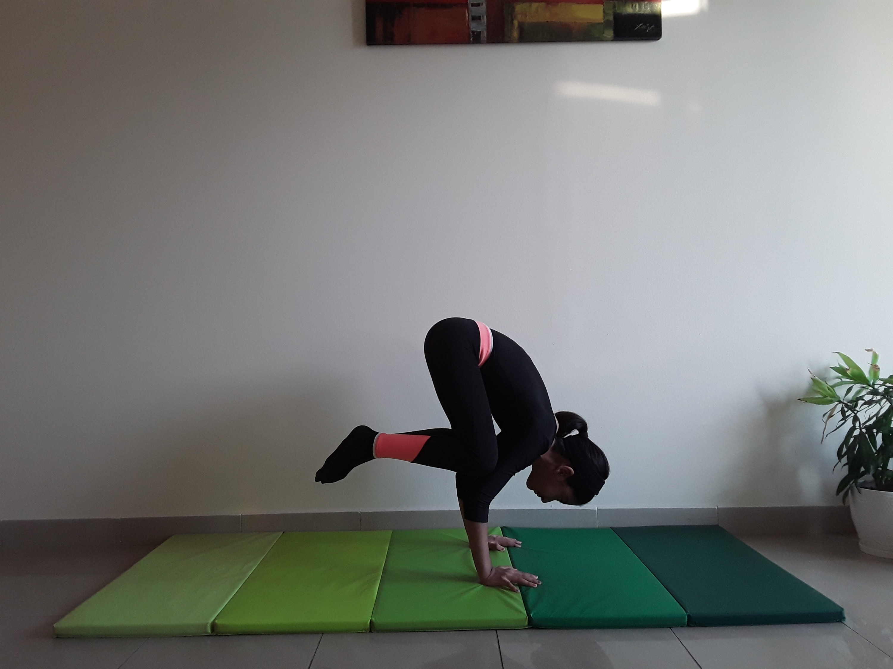

CROW POSE

Steps to perform Crow Pose
- Bend your knees slightly so that you can bring your palms flat on the floor, about shoulder distance apart.
- Plant your palms firmly on the mat about a foot in front of your feet. Spread your fingers wide and press into the top joint of each finger.
- Bend your elbows straight back. Don't bend them into full Chaturanga arms, but head in that direction.
- Come up onto the balls of your feet and open your knees so that they line up with your upper arms.
- Place your knees on the backs of your upper arms.
- Begin to bring your weight forward into your hands, lifting your head as you go.
- Come up onto your tiptoes, lifting one foot and then the other off the floor.
- Engage the inner thighs for support while keeping the knees on the arms.
- Hug your feet toward your butt.
- Focus on the feeling of the body lifting. Avoid sinking into the pose, which can dump weight into the shoulders.
- To come out, exhale and transfer your weight back until your feet come back to the floor.